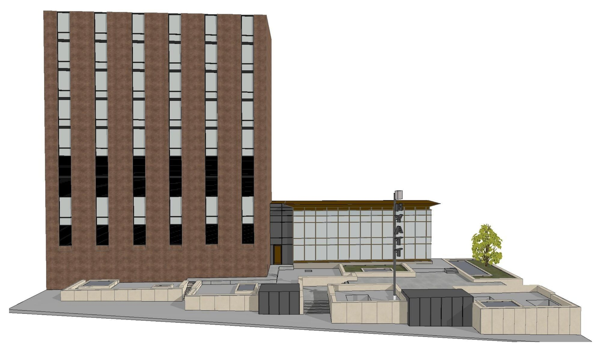

Kaltrina Ajdini
Work
About
Contact
Work
About
Contact
Selected Work
Grid
List

01
Hyatt Regency Chicago
Documentation
Chicago, IL
Scan-to-BIM documentation and stone-cap shop drawings for the outdoor plaza of the Hyatt Regency Chicago on East Wacker Drive.
02
200 S Wacker
Documentation
Chicago, IL
A scan-based documentation and technical coordination study for the exterior plaza of 200 S Wacker in downtown Chicago.
03
Primary School
Public facility
A school organised around group learning, with shared spaces and an atrium between the classrooms.
04
Olympic Pool
Public facility
A sports centre that pulls the surrounding greenery into the building through long views.
05
Office Building
Public facility
An office building with a rigid urban façade and a second skin of aluminium louvres over a transparent curtain wall.
06
Flexible Housing
Residential
A housing block whose apartments can adapt to the changing needs of the people living in them.
07
Geodes Office
Interior design
A green, technologically advanced office interior designed around flexible work and employee well-being.